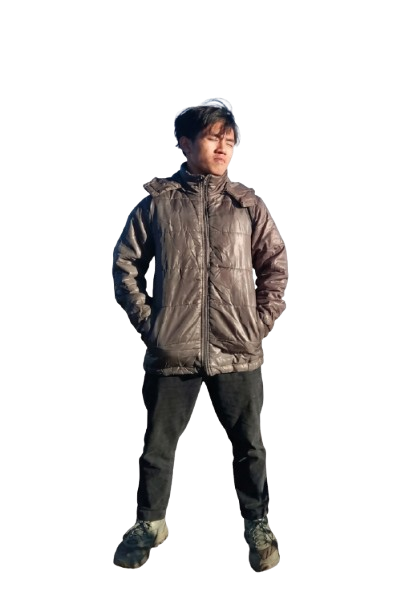
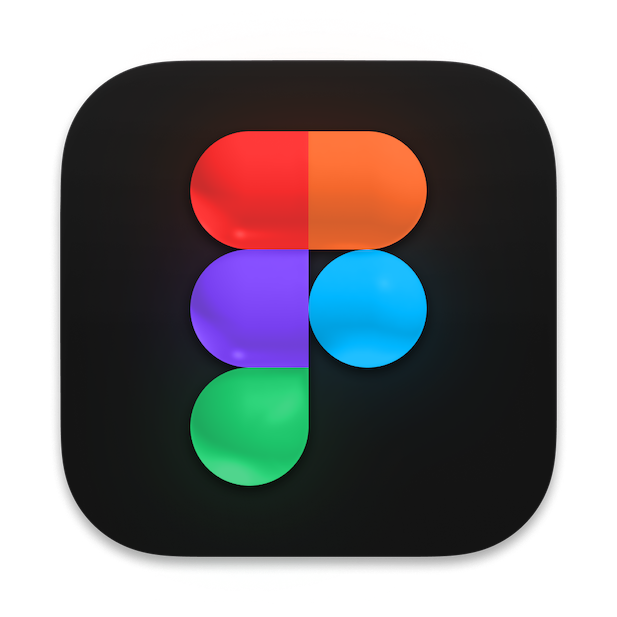
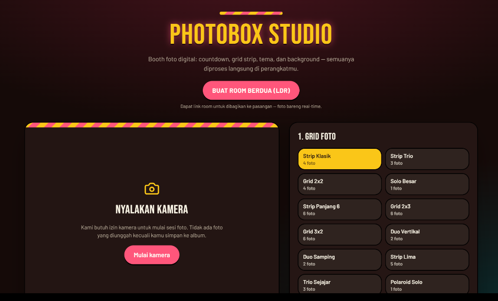
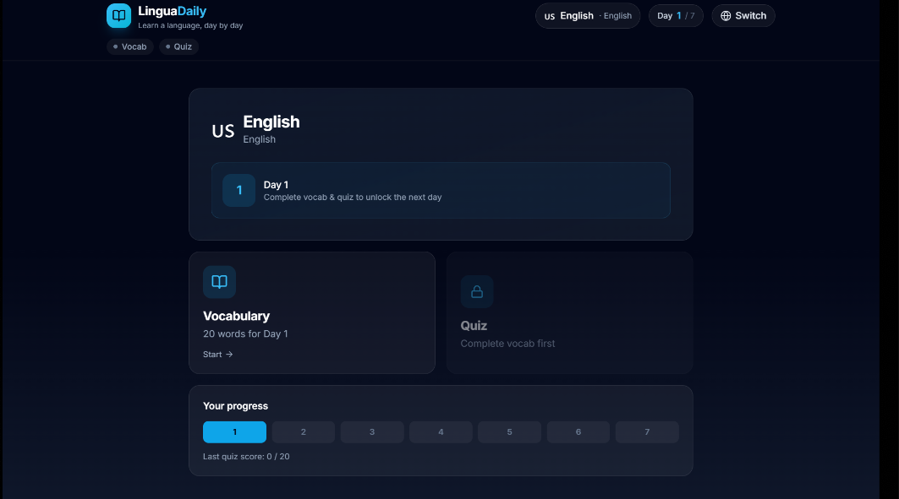

ABOUT ME
Crafting Digital Experiences
That Make Impact
Saya adalah seorang Full-Stack Developer yang suka belajar dan mengembangkan website. Saat ini, saya terus mengasah kemampuan dalam HTML, CSS, JavaScript, Python, React, dan Node.js, serta mencoba berbagai teknologi baru untuk menambah pengalaman di dunia web development.
Di luar dunia pemrograman, saya juga tertarik pada UI/UX Design, cybersecurity, dan desain poster Islami. Saya senang mempelajari hal baru, mengeksplorasi ide kreatif, serta mengembangkan keterampilan untuk menciptakan karya digital yang bermanfaat.
Hammam
3+
Years Experience
Organisasi
Mudabbir
🗓️ 2025 – 2026
Mudabbir (pembimbing santri)
Membimbing dan mengatur kegiatan harian santri, mulai dari jadwal ibadah dan belajar sampai kedisiplinan asrama.
- Memimpin kelompok santri dan menjadi penghubung dengan pengasuh
- Menyusun dan mengawasi jadwal kegiatan harian
Sapala
🗓️ 2024 – 2025
Pengurus Sapala
Merancang dan menjalankan program kerja serta kegiatan luar ruangan (outdoor) dan pecinta alam.
- Menjadi panitia dan pelaksana kegiatan dari perencanaan sampai evaluasi
- Berkoordinasi dengan pembina, pengurus, dan seluruh anggota
OSIS
🗓️ 2024 – 2025
Pengurus OSIS
Merancang dan menjalankan program kerja serta kegiatan sekolah bersama pengurus lain.
- Menjadi panitia acara sekolah dari perencanaan sampai evaluasi
- Berkoordinasi dengan guru, pembina, dan seluruh seksi
💻 Keahlian & Teknologi
⚽ Hobi & Minat
📖 Keagamaan
DESIGN · DEVELOP · CREATE
Tools And Skills
UI/UX Design
Website Development
Image Editing
PROJECTS
A collection of programming projects and source code repositories managed using GitHub, showcasing development progress, coding practices, project documentation, and various technologies
🌐 Lihat Terjemahan Bahasa Indonesia

An Islamic poster design created using Figma, featuring an inspiring Quranic message with elegant typography and a visually appealing layout.
🌐 Lihat Terjemahan Bahasa Indonesia

A digital photo booth web application featuring client-side camera capture, customizable photo grid strips, countdown timers, themes, and a real-time dual-room (LDR) photo mode.
🌐 Lihat Terjemahan Bahasa Indonesia

A daily multilingual learning web application featuring a 7-day structured curriculum, interactive vocabulary modules, unlockable progress quizzes, and real-time score tracking.
🌐 Lihat Terjemahan Bahasa Indonesia
Prestasi & Penghargaan
Daftar pencapaian, sertifikasi, dan penghargaan yang berhasil saya peroleh.

Contact Me
Tertarik dengan Website saya, mau diajarkan untuk menjadi Hafidz Quran Mahir IT? Silakan hubungi kontak langsung atau media sosial di bawah ini.